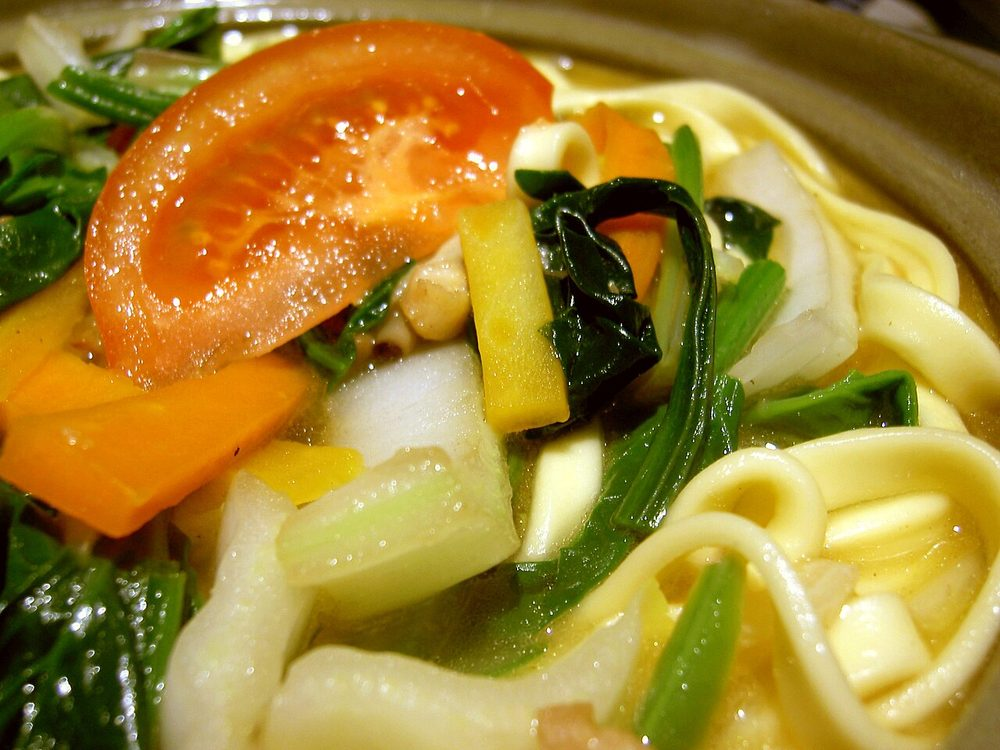

Thukpa
sikkim's hand-torn noodle soup, chicken broth thick with vegetables and pepper

Contains: gluten
Checked against the ingredient list for milk, egg, fish, crustaceans, tree nuts, peanuts, sesame, mustard, soy and gluten. Nothing else is checked, and brands vary, so read the label on anything you have not bought before.
Ingredients
Quantities for 4.
- 250g Maidafor hand-pulled noodles; 300g of ready wheat noodles works if you would rather not
- 400g boneless thigh, cut into thin strips Chicken
- 1 large, sliced Onion
- 5 cloves, chopped Garlic
- 1 tbsp, chopped Ginger
- 2, chopped Tomato
- 1, julienned Carrotoptional
- 100g, shredded Cabbageoptional
- 2 large handfuls Spinachoptional
- 4, chopped Spring Onionoptional
- 1 tsp, coarsely crushed Black Pepper
- 1/2 tsp Turmeric
- 1/2 tsp Chilli Powderoptional
- 2 tbsp Neutral Oil
- 3 tbsp, chopped Coriander Leavesoptional
- to taste Salt
- 1.2 litres for the broth, plus about 120ml for the dough Water
Cookware
stovetop
Before you start
- Make the dough first and let it rest 30 minutes before you touch it again. Unrested, it springs back and you will fight it the whole time.
- Have every vegetable cut before the broth goes on. Once the noodles are in, this dish moves in under five minutes.
- Cook the noodles in the soup, not separately. The starch they release is what gives thukpa its body.
Method
- Mix the maida with 1/2 tsp salt and enough water (about 120ml) to make a firm, slightly stiff dough. Knead 8 minutes until smooth, then cover and rest 30 minutes.Firmer than a chapati dough. A soft dough tears into shapeless scraps in the broth.
- Heat the oil in a large pot and fry the onion, garlic and ginger 5 minutes over medium heat, until the onion is soft and the garlic smells sweet.
- Add the chicken strips and fry 5 minutes, until they have lost their pink and picked up a little colour at the edges.
- Stir in the turmeric, chilli powder and crushed black pepper for 20 seconds, then add the tomato and cook 5 minutes until it collapses.
- Pour in the 1.2 litres of water, add salt, and simmer 15 minutes with the lid ajar.
- While it simmers, roll the rested dough out to about 2mm and cut or tear it into ribbons roughly 2cm wide and 10cm long. Dust them with flour and keep them separate.Torn edges hold the broth better than knife-cut ones, which is why thenthuk is torn by hand.
- Add the carrot to the simmering broth and cook 3 minutes.
- Drop the noodles in a few at a time, stirring so they do not clump, and boil 4 minutes until they float and turn from chalky to translucent.A few at a time, into moving liquid. Dumped in together they weld into a single mass.
- Add the cabbage and spinach and cook 2 minutes more, until the spinach has just wilted.
- Taste for salt and pepper, ladle into deep bowls and finish with spring onion and coriander.
Storage
Best eaten straight away. The noodles keep swelling and drink the broth. If you want leftovers, cook and store the broth separately for up to 3 days and boil fresh noodles into a reheated portion.
Nutrition Good estimate
| Per serving349 g | Per 100 g | |
|---|---|---|
| Calories | 467 kcal | 134 kcal |
| Protein | 30.4 g | 9 g |
| Carbohydrate | 61.3 g | 18 g |
| of which sugars | 5.5 g | 2 g |
| Fibre | 5.5 g | 2 g |
| Fat | 11.0 g | 3 g |
| of which saturated | 1.7 g | 0 g |
| of which unsaturated | 8.0 g | 2 g |
Worked out from the listed quantities; most of the ingredient list could be weighed. Estimated from raw ingredients using USDA FoodData Central. Cooking changes are not modelled, and added salt is excluded, so sodium is not given.
Recipe v1.0.0, last updated 2026-07-31. Curated for Khaana and kept under version control.